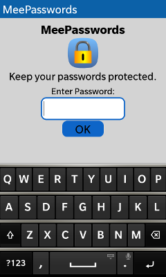

MeePasswords
Keep your passwords protected.
About
Screenshots
Download/Installation
Usage
How it works
License
About
MeePasswords is a simple tool to securely store short snippets of sensible or confidential data such as passwords and the like. MeePasswords is available for BlackBerry (BB10) Z10, Q10, and Q5, MeeGo/Harmattan (Nokia N9), Mer (Nemomobile, Plasma Active), and Desktops (both Linux and Windows). It features a clear, simple, and easy to use user interface.
You can easily synchronize the password list with your desktop or other MeePasswords installations. Please note that you need to have an e-mail account that supports IMAP and, optionally, the MeePasswords desktop version for this.
MeePasswords encrypts the stored data with a freely choosable master password. It uses sophisticated AES encryption (AES256CBC) for encrypting the data. For more details on how it works see the How it works section.
Features
The main features of MeePasswords are:
- AES256CBC encryption
- Synchronization between Different Installations, e.g., Smartphone and Desktop (Requires an e-mail account with IMAP support.)
- Simple and Easy to Use User Interface
- Available for Smartphones (BlackBerry (BB10) Z10, Q10, and Q5, Nokia N9, and Nemomobile), Tablets (Plasma Active), and Desktops (Linux, Windows)
- Changeable master password
- Possibility to conveniently copy stored data
- Import and export of KeePassX XML files (Desktop Version)
- Automatic logout when screen is locked
- Support for Touch Screens and "Normal" Mouse/Keyboard Control
- Intuitive Swipe Gestures in all Versions
- Keyboard Shortcuts for Desktop Version
Screenshots
Starting with MeePasswords 2.0.0, the user interface is very much identical for all platforms.BB10
Below, exemplarily, screenshots of the BB10 version are shown.



Download/Installation
MeePasswords is currently available for BlackBerry (BB10) Z10, Q10, and Q5, Nokia N9 (MeeGo/Harmattan), Mer (Nemomobile, Plasma Active), and Desktops (Linux, Windows).
BlackBerry (BB10) Z10, Q10, and Q5
The BB10 version can be installed via BlackBerry World.
Nokia N9 (MeeGo/Harmattan)
For Nokia N9 (MeeGo/Harmattan), two versions exist: version 2.0.0 and up and version 1.9.3.
Versions 2.0.0 and up come with sync support, the new user interface as shown on the screenshots, and the latest improvements. Version 1.9.3 does not offer sync support and was last updated in mid 2012.
Version 1.9.3 is free. Versions 2.0.0+ cost a small price. The actual price may differ depending on your country.
Both versions can be installed via the Nokia Store. The 2.0.0+ version is currently in review for being published via the store. The 1.9.3 version can be downloaded from http://store.ovi.com/content/284594
Mer (Nemomobile, Plasma Active)
The Mer version can be found in the Mer apps repository. To install it simply run "zypper in qtodo" as root on your Mer device. Please note: if you have problems installing MeePasswords on Plasma Active you need the "nemo-compatibility" package.
Desktop (Linux, Windows)
The Desktop Linux and Windows versions can be downloaded from here:
These files are archives, which can be simply extracted in any place. In order to run MeePasswords execute "meepasswords.exe" (Windows Version) or "meepasswords.sh" (Linux Version).
Usage
Getting Started
On the first start you have to set the master password. This password is used to encrypt the data. Please make sure to remember your password as there is no way to access or recover the stored data when the password is lost.
After the master password was entered the list view is displayed. On the first start it will be empty. Use "+" to add new entries.
Navigation
For navigating in MeePasswords swipe gestures are encouraged. To scroll in the list of stored entries swipe up and down.
In order to view a stored entry, select it from the list and then swipe left by moving from right to left. This will display the selected entry.
Synchronization
MeePasswords offers a synchronization feature. With this synchronization feature it is possible to synchronize data between different MeePasswords instances. The probably most common use case for the synchronization feature is to synchronize to-dos between smartphones and desktop computers. However, synchronizing between different desktop computers, e.g., at home and at work, is also very handy.
Before the synchronization feature can be used some requirements must be fulfilled and settings need to be set up. Below are the instructions for setting up the synchronization functionality.
General Requirements
MeePasswords uses the IMAP protocol for its synchronization feature. IMAP is most commonly used in the context of e-mails. So, the basic requirement for using the MeePasswords synchronization functionality is an e-mail account with IMAP support.
BlackBerry (BB10) Z10, Q10, and Q5, and Desktop (Linux, Windows)
In order to be able to use the synchronization feature, the account details (server address, username, and password) need to be set up first. To do this, open the menu in MeePasswords and choose the point "Sync Account Settings".
To add a new account click "New". Then you can insert the account details. The account name is a freely choosable name that is only used for identifying the account within MeePasswords. The user name is the user name of your e-mail account, the password is the according e-mail account password and server is the address of the e-mail server you are using. The other settings like port number etc. are already set to default values. If you have problems logging in please notify me via e-mail. I will try to assist you in this case.
Once you have finished entering the account details, click "Save". The newly created account should appear in the account list. Select the newly created account and click "OK".
I hope the pre-defined default values make sense for most e-mail providers out there. If you happen to have issues with setting up the synchronization feature, feel free to contact me via e-mail.
Nokia N9 (MeeGo/Harmattan)
In order to use the synchronization feature on the Nokia N9 (MeeGo/Harmattan) it is required to set up an e-mail account that supports IMAP. This is done via the Nokia N9 accounts app. Once an e-mail account with support for the IMAP protocol was set up, the synchronization feature can be used out of the box.
In case you have multiple e-mail accounts with support for the IMAP protocol, you need to select one for synchronization. To do this open the menu and click "Sync Account Settings". From the list select the account you want to use and press "OK".
How it works
MeePasswords uses 256 bit AES encryption in chain block cipher (CBC) mode for encrypting the password file. The access is protected by a user given password.
Please note that there is no way to recover a lost password. So, if the password is lost all entries stored in MeePasswords are lost as well.
For the encryption in CBC mode, a randomly generated initialization vector is used. For each encryption run, a new, randomly generated initialization vector is generated.
From the password, first a hash (SHA256) is generated. Afterwards, for the actual generation of the encryption key, the PBKDF2 algorithm is used. The SHA256 hash is fed into PBKDF2 and is processed in 10,000 rounds.
License
This section is intended to give an overview of the software and technologies used in MeePasswords. Additionally, a list of licenses, copyrights, and trademarks is given. Though, no claim for completeness is made.
MeePasswords
Copyright 2011-2013, Ruediger Gad <r.c.g@gmx.de>
MeePasswords is free software: you can redistribute it and/or modify it under the terms of the GNU General Public License as published by the Free Software Foundation, either version 3 of the License, or (at your option) any later version.
MeePasswords is distributed in the hope that it will be useful, but WITHOUT ANY WARRANTY; without even the implied warranty of MERCHANTABILITY or FITNESS FOR A PARTICULAR PURPOSE. See the GNU General Public License for more details.
You should have received a copy of the GNU General Public License along with MeePasswords. If not, see http://www.gnu.org/licenses/.
Libraries
Except of the standard C and C++ libraries, MeePasswords, depending on the actual platform and version, makes use of the following libraries: OpenSSL, Qt, the Qt Cryptographic Architecture (QCA), and the Qt Messaging Framework (QMF).
Note that compiled OpenSSL libraries are only included for the Windows version. Please see also the remarks about the Windows version below. Following is an excerpt of the OpenSSL licensing explanation: "... The OpenSSL toolkit is licensed under an Apache-style licence which basically means that you are free to get and use it for commercial and non-commercial purposes. ...". See also: http://www.openssl.org/about/
The Qt Toolkit is Copyright (C) 2012 Digia Plc and/or its subsidiary(-ies) and other contributors. Qt is licensed either under a commercial license agreement, the GNU Lesser General Public License (LGPL) version 2.1, or the GNU General Public License (GPL) version 3.0. See also: http://qt-project.org/doc/qt-4.8/licensing.html
The Qt Messaging Framework (QMF), Copyright (C) 2010 Nokia Corporation and/or its subsidiary(-ies) and later Copyright (C) 2013 Digia Plc and/or its subsidiary(-ies) (Please refer to the actual QMF version for the actual licensing/copyright information.), is licensed under the terms of the GNU Lesser General Public License (LGPL) version 2.1. See also the QMF gitorious page: http://qt.gitorious.org/qt-labs/messagingframework
The Windows version of MeePasswords also ships with libraries part of the MinGW runtime. These libraries are public domain, and are not governed by copyright. See also: http://www.mingw.org. All libraries based on GNU tools are licensed under the terms of the GPL. Furthermore, the Windows version ships with libraries from the OpenSSL project. The compiled OpenSSL libraries had been extracted from pre-compiled packages of OpenSSL that had been downloaded from: http://slproweb.com/products/Win32OpenSSL.html
Header Files
Additionally to above mentioned libraries the git repository of MeePasswords contains unmodified header files of QCA and QMF. For the detailed licenses etc. please see the respective header files.
Packaging
The Windows version ships with dynamic link libraries (DLLs) and executables taken from MinGW, OpenSSL, qmlcanvas, QCA, Qt, and QMF. The QCA and QMF binaries and executables had been compiled from the source tarballs that can be found in the MeePasswords repository.
The Mer version (e.g. the version that ships with Nemomobile) does not ship with additional libraries. All required libraries are shipped with Mer.
Trademarks
Linux is a registered trademark of Linus Torvalds.
Nokia and respective logos are trademarks of Nokia Corporation in Finland and/or other countries worldwide.
Digia, Qt, and the Qt logo are registered trademarks of Digia plc and/or its subsidiaries and is used pursuant to a license from Digia plc and/or its subsidiaries.
Windows is a registered trademark of Microsoft Corporation in the United States and other countries.
All other trademarks are property of their respective owners.